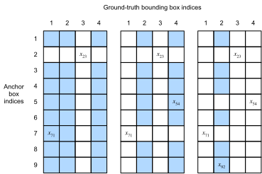

Anchor Boxes⚓︎
:label:sec_anchor
Object detection algorithms usually
sample a large number of regions in the input image, determine whether these regions contain
objects of interest, and adjust the boundaries
of the regions so as to predict the
ground-truth bounding boxes
of the objects more accurately.
Different models may adopt
different region sampling schemes.
Here we introduce one of such methods:
it generates multiple bounding boxes with varying scales and aspect ratios centered on each pixel.
These bounding boxes are called anchor boxes.
We will design an object detection model
based on anchor boxes in :numref:sec_ssd.
First, let's modify the printing accuracy just for more concise outputs.
#@tab mxnet
%matplotlib inline
from d2l import mxnet as d2l
from mxnet import gluon, image, np, npx
np.set_printoptions(2) # Simplify printing accuracy
npx.set_np()
#@tab pytorch
%matplotlib inline
from d2l import torch as d2l
import torch
torch.set_printoptions(2) # Simplify printing accuracy
Generating Multiple Anchor Boxes⚓︎
Suppose that the input image has a height of \(h\) and width of \(w\). We generate anchor boxes with different shapes centered on each pixel of the image. Let the scale be \(s\in (0, 1]\) and the aspect ratio (ratio of width to height) is \(r > 0\). Then [the width and height of the anchor box are \(ws\sqrt{r}\) and \(hs/\sqrt{r}\), respectively.] Note that when the center position is given, an anchor box with known width and height is determined.
To generate multiple anchor boxes with different shapes, let's set a series of scales \(s_1,\ldots, s_n\) and a series of aspect ratios \(r_1,\ldots, r_m\). When using all the combinations of these scales and aspect ratios with each pixel as the center, the input image will have a total of \(whnm\) anchor boxes. Although these anchor boxes may cover all the ground-truth bounding boxes, the computational complexity is easily too high. In practice, we can only (consider those combinations containing) \(s_1\) or \(r_1\):
((\((s_1, r_1), (s_1, r_2), \ldots, (s_1, r_m), (s_2, r_1), (s_3, r_1), \ldots, (s_n, r_1).\)\))
That is to say, the number of anchor boxes centered on the same pixel is \(n+m-1\). For the entire input image, we will generate a total of \(wh(n+m-1)\) anchor boxes.
The above method of generating anchor boxes is implemented in the following multibox_prior function. We specify the input image, a list of scales, and a list of aspect ratios, then this function will return all the anchor boxes.
#@tab mxnet
#@save
def multibox_prior(data, sizes, ratios):
"""Generate anchor boxes with different shapes centered on each pixel."""
in_height, in_width = data.shape[-2:]
device, num_sizes, num_ratios = data.ctx, len(sizes), len(ratios)
boxes_per_pixel = (num_sizes + num_ratios - 1)
size_tensor = d2l.tensor(sizes, ctx=device)
ratio_tensor = d2l.tensor(ratios, ctx=device)
# Offsets are required to move the anchor to the center of a pixel. Since
# a pixel has height=1 and width=1, we choose to offset our centers by 0.5
offset_h, offset_w = 0.5, 0.5
steps_h = 1.0 / in_height # Scaled steps in y-axis
steps_w = 1.0 / in_width # Scaled steps in x-axis
# Generate all center points for the anchor boxes
center_h = (d2l.arange(in_height, ctx=device) + offset_h) * steps_h
center_w = (d2l.arange(in_width, ctx=device) + offset_w) * steps_w
shift_x, shift_y = d2l.meshgrid(center_w, center_h)
shift_x, shift_y = shift_x.reshape(-1), shift_y.reshape(-1)
# Generate `boxes_per_pixel` number of heights and widths that are later
# used to create anchor box corner coordinates (xmin, xmax, ymin, ymax)
w = np.concatenate((size_tensor * np.sqrt(ratio_tensor[0]),
sizes[0] * np.sqrt(ratio_tensor[1:]))) \
* in_height / in_width # Handle rectangular inputs
h = np.concatenate((size_tensor / np.sqrt(ratio_tensor[0]),
sizes[0] / np.sqrt(ratio_tensor[1:])))
# Divide by 2 to get half height and half width
anchor_manipulations = np.tile(np.stack((-w, -h, w, h)).T,
(in_height * in_width, 1)) / 2
# Each center point will have `boxes_per_pixel` number of anchor boxes, so
# generate a grid of all anchor box centers with `boxes_per_pixel` repeats
out_grid = d2l.stack([shift_x, shift_y, shift_x, shift_y],
axis=1).repeat(boxes_per_pixel, axis=0)
output = out_grid + anchor_manipulations
return np.expand_dims(output, axis=0)
#@tab pytorch
#@save
def multibox_prior(data, sizes, ratios):
"""Generate anchor boxes with different shapes centered on each pixel."""
in_height, in_width = data.shape[-2:]
device, num_sizes, num_ratios = data.device, len(sizes), len(ratios)
boxes_per_pixel = (num_sizes + num_ratios - 1)
size_tensor = d2l.tensor(sizes, device=device)
ratio_tensor = d2l.tensor(ratios, device=device)
# Offsets are required to move the anchor to the center of a pixel. Since
# a pixel has height=1 and width=1, we choose to offset our centers by 0.5
offset_h, offset_w = 0.5, 0.5
steps_h = 1.0 / in_height # Scaled steps in y axis
steps_w = 1.0 / in_width # Scaled steps in x axis
# Generate all center points for the anchor boxes
center_h = (torch.arange(in_height, device=device) + offset_h) * steps_h
center_w = (torch.arange(in_width, device=device) + offset_w) * steps_w
shift_y, shift_x = torch.meshgrid(center_h, center_w, indexing='ij')
shift_y, shift_x = shift_y.reshape(-1), shift_x.reshape(-1)
# Generate `boxes_per_pixel` number of heights and widths that are later
# used to create anchor box corner coordinates (xmin, xmax, ymin, ymax)
w = torch.cat((size_tensor * torch.sqrt(ratio_tensor[0]),
sizes[0] * torch.sqrt(ratio_tensor[1:])))\
* in_height / in_width # Handle rectangular inputs
h = torch.cat((size_tensor / torch.sqrt(ratio_tensor[0]),
sizes[0] / torch.sqrt(ratio_tensor[1:])))
# Divide by 2 to get half height and half width
anchor_manipulations = torch.stack((-w, -h, w, h)).T.repeat(
in_height * in_width, 1) / 2
# Each center point will have `boxes_per_pixel` number of anchor boxes, so
# generate a grid of all anchor box centers with `boxes_per_pixel` repeats
out_grid = torch.stack([shift_x, shift_y, shift_x, shift_y],
dim=1).repeat_interleave(boxes_per_pixel, dim=0)
output = out_grid + anchor_manipulations
return output.unsqueeze(0)
We can see that [the shape of the returned anchor box variable Y] is
(batch size, number of anchor boxes, 4).
#@tab mxnet
img = image.imread('../img/catdog.jpg').asnumpy()
h, w = img.shape[:2]
print(h, w)
X = np.random.uniform(size=(1, 3, h, w)) # Construct input data
Y = multibox_prior(X, sizes=[0.75, 0.5, 0.25], ratios=[1, 2, 0.5])
Y.shape
#@tab pytorch
img = d2l.plt.imread('../img/catdog.jpg')
h, w = img.shape[:2]
print(h, w)
X = torch.rand(size=(1, 3, h, w)) # Construct input data
Y = multibox_prior(X, sizes=[0.75, 0.5, 0.25], ratios=[1, 2, 0.5])
Y.shape
After changing the shape of the anchor box variable Y to (image height, image width, number of anchor boxes centered on the same pixel, 4),
we can obtain all the anchor boxes centered on a specified pixel position.
In the following,
we [access the first anchor box centered on (250, 250)]. It has four elements: the \((x, y)\)-axis coordinates at the upper-left corner and the \((x, y)\)-axis coordinates at the lower-right corner of the anchor box.
The coordinate values of both axes
are divided by the width and height of the image, respectively.
#@tab all
boxes = Y.reshape(h, w, 5, 4)
boxes[250, 250, 0, :]
In order to [show all the anchor boxes centered on one pixel in the image],
we define the following show_bboxes function to draw multiple bounding boxes on the image.
#@tab all
#@save
def show_bboxes(axes, bboxes, labels=None, colors=None):
"""Show bounding boxes."""
def make_list(obj, default_values=None):
if obj is None:
obj = default_values
elif not isinstance(obj, (list, tuple)):
obj = [obj]
return obj
labels = make_list(labels)
colors = make_list(colors, ['b', 'g', 'r', 'm', 'c'])
for i, bbox in enumerate(bboxes):
color = colors[i % len(colors)]
rect = d2l.bbox_to_rect(d2l.numpy(bbox), color)
axes.add_patch(rect)
if labels and len(labels) > i:
text_color = 'k' if color == 'w' else 'w'
axes.text(rect.xy[0], rect.xy[1], labels[i],
va='center', ha='center', fontsize=9, color=text_color,
bbox=dict(facecolor=color, lw=0))
As we just saw, the coordinate values of the \(x\) and \(y\) axes in the variable boxes have been divided by the width and height of the image, respectively.
When drawing anchor boxes,
we need to restore their original coordinate values;
thus, we define variable bbox_scale below.
Now, we can draw all the anchor boxes centered on (250, 250) in the image.
As you can see, the blue anchor box with a scale of 0.75 and an aspect ratio of 1 well
surrounds the dog in the image.
#@tab all
d2l.set_figsize()
bbox_scale = d2l.tensor((w, h, w, h))
fig = d2l.plt.imshow(img)
show_bboxes(fig.axes, boxes[250, 250, :, :] * bbox_scale,
['s=0.75, r=1', 's=0.5, r=1', 's=0.25, r=1', 's=0.75, r=2',
's=0.75, r=0.5'])
[Intersection over Union (IoU)]⚓︎
We just mentioned that an anchor box "well" surrounds the dog in the image. If the ground-truth bounding box of the object is known, how can "well" here be quantified? Intuitively, we can measure the similarity between the anchor box and the ground-truth bounding box. We know that the Jaccard index can measure the similarity between two sets. Given sets \(\mathcal{A}\) and \(\mathcal{B}\), their Jaccard index is the size of their intersection divided by the size of their union:
In fact, we can consider the pixel area of any bounding box as a set of pixels.
In this way, we can measure the similarity of the two bounding boxes by the Jaccard index of their pixel sets. For two bounding boxes, we usually refer their Jaccard index as intersection over union (IoU), which is the ratio of their intersection area to their union area, as shown in :numref:fig_iou.
The range of an IoU is between 0 and 1:
0 means that two bounding boxes do not overlap at all,
while 1 indicates that the two bounding boxes are equal.
 :label:
:label:fig_iou
For the remainder of this section, we will use IoU to measure the similarity between anchor boxes and ground-truth bounding boxes, and between different anchor boxes.
Given two lists of anchor or bounding boxes,
the following box_iou computes their pairwise IoU
across these two lists.
#@tab mxnet
#@save
def box_iou(boxes1, boxes2):
"""Compute pairwise IoU across two lists of anchor or bounding boxes."""
box_area = lambda boxes: ((boxes[:, 2] - boxes[:, 0]) *
(boxes[:, 3] - boxes[:, 1]))
# Shape of `boxes1`, `boxes2`, `areas1`, `areas2`: (no. of boxes1, 4),
# (no. of boxes2, 4), (no. of boxes1,), (no. of boxes2,)
areas1 = box_area(boxes1)
areas2 = box_area(boxes2)
# Shape of `inter_upperlefts`, `inter_lowerrights`, `inters`: (no. of
# boxes1, no. of boxes2, 2)
inter_upperlefts = np.maximum(boxes1[:, None, :2], boxes2[:, :2])
inter_lowerrights = np.minimum(boxes1[:, None, 2:], boxes2[:, 2:])
inters = (inter_lowerrights - inter_upperlefts).clip(min=0)
# Shape of `inter_areas` and `union_areas`: (no. of boxes1, no. of boxes2)
inter_areas = inters[:, :, 0] * inters[:, :, 1]
union_areas = areas1[:, None] + areas2 - inter_areas
return inter_areas / union_areas
#@tab pytorch
#@save
def box_iou(boxes1, boxes2):
"""Compute pairwise IoU across two lists of anchor or bounding boxes."""
box_area = lambda boxes: ((boxes[:, 2] - boxes[:, 0]) *
(boxes[:, 3] - boxes[:, 1]))
# Shape of `boxes1`, `boxes2`, `areas1`, `areas2`: (no. of boxes1, 4),
# (no. of boxes2, 4), (no. of boxes1,), (no. of boxes2,)
areas1 = box_area(boxes1)
areas2 = box_area(boxes2)
# Shape of `inter_upperlefts`, `inter_lowerrights`, `inters`: (no. of
# boxes1, no. of boxes2, 2)
inter_upperlefts = torch.max(boxes1[:, None, :2], boxes2[:, :2])
inter_lowerrights = torch.min(boxes1[:, None, 2:], boxes2[:, 2:])
inters = (inter_lowerrights - inter_upperlefts).clamp(min=0)
# Shape of `inter_areas` and `union_areas`: (no. of boxes1, no. of boxes2)
inter_areas = inters[:, :, 0] * inters[:, :, 1]
union_areas = areas1[:, None] + areas2 - inter_areas
return inter_areas / union_areas
Labeling Anchor Boxes in Training Data⚓︎
:label:subsec_labeling-anchor-boxes
In a training dataset, we consider each anchor box as a training example. In order to train an object detection model, we need class and offset labels for each anchor box, where the former is the class of the object relevant to the anchor box and the latter is the offset of the ground-truth bounding box relative to the anchor box. During the prediction, for each image we generate multiple anchor boxes, predict classes and offsets for all the anchor boxes, adjust their positions according to the predicted offsets to obtain the predicted bounding boxes, and finally only output those predicted bounding boxes that satisfy certain criteria.
As we know, an object detection training set comes with labels for locations of ground-truth bounding boxes and classes of their surrounded objects. To label any generated anchor box, we refer to the labeled location and class of its assigned ground-truth bounding box that is closest to the anchor box. In the following, we describe an algorithm for assigning closest ground-truth bounding boxes to anchor boxes.
[Assigning Ground-Truth Bounding Boxes to Anchor Boxes]⚓︎
Given an image, suppose that the anchor boxes are \(A_1, A_2, \ldots, A_{n_a}\) and the ground-truth bounding boxes are \(B_1, B_2, \ldots, B_{n_b}\), where \(n_a \geq n_b\). Let's define a matrix \(\mathbf{X} \in \mathbb{R}^{n_a \times n_b}\), whose element \(x_{ij}\) in the \(i^\textrm{th}\) row and \(j^\textrm{th}\) column is the IoU of the anchor box \(A_i\) and the ground-truth bounding box \(B_j\). The algorithm consists of the following steps:
- Find the largest element in matrix \(\mathbf{X}\) and denote its row and column indices as \(i_1\) and \(j_1\), respectively. Then the ground-truth bounding box \(B_{j_1}\) is assigned to the anchor box \(A_{i_1}\). This is quite intuitive because \(A_{i_1}\) and \(B_{j_1}\) are the closest among all the pairs of anchor boxes and ground-truth bounding boxes. After the first assignment, discard all the elements in the \({i_1}^\textrm{th}\) row and the \({j_1}^\textrm{th}\) column in matrix \(\mathbf{X}\).
- Find the largest of the remaining elements in matrix \(\mathbf{X}\) and denote its row and column indices as \(i_2\) and \(j_2\), respectively. We assign ground-truth bounding box \(B_{j_2}\) to anchor box \(A_{i_2}\) and discard all the elements in the \({i_2}^\textrm{th}\) row and the \({j_2}^\textrm{th}\) column in matrix \(\mathbf{X}\).
- At this point, elements in two rows and two columns in matrix \(\mathbf{X}\) have been discarded. We proceed until all elements in \(n_b\) columns in matrix \(\mathbf{X}\) are discarded. At this time, we have assigned a ground-truth bounding box to each of \(n_b\) anchor boxes.
- Only traverse through the remaining \(n_a - n_b\) anchor boxes. For example, given any anchor box \(A_i\), find the ground-truth bounding box \(B_j\) with the largest IoU with \(A_i\) throughout the \(i^\textrm{th}\) row of matrix \(\mathbf{X}\), and assign \(B_j\) to \(A_i\) only if this IoU is greater than a predefined threshold.
Let's illustrate the above algorithm using a concrete
example.
As shown in :numref:fig_anchor_label (left), assuming that the maximum value in matrix \(\mathbf{X}\) is \(x_{23}\), we assign the ground-truth bounding box \(B_3\) to the anchor box \(A_2\).
Then, we discard all the elements in row 2 and column 3 of the matrix, find the largest \(x_{71}\) in the remaining elements (shaded area), and assign the ground-truth bounding box \(B_1\) to the anchor box \(A_7\).
Next, as shown in :numref:fig_anchor_label (middle), discard all the elements in row 7 and column 1 of the matrix, find the largest \(x_{54}\) in the remaining elements (shaded area), and assign the ground-truth bounding box \(B_4\) to the anchor box \(A_5\).
Finally, as shown in :numref:fig_anchor_label (right), discard all the elements in row 5 and column 4 of the matrix, find the largest \(x_{92}\) in the remaining elements (shaded area), and assign the ground-truth bounding box \(B_2\) to the anchor box \(A_9\).
After that, we only need to traverse through
the remaining anchor boxes \(A_1, A_3, A_4, A_6, A_8\) and determine whether to assign them ground-truth bounding boxes according to the threshold.

:label:fig_anchor_label
This algorithm is implemented in the following assign_anchor_to_bbox function.
#@tab mxnet
#@save
def assign_anchor_to_bbox(ground_truth, anchors, device, iou_threshold=0.5):
"""Assign closest ground-truth bounding boxes to anchor boxes."""
num_anchors, num_gt_boxes = anchors.shape[0], ground_truth.shape[0]
# Element x_ij in the i-th row and j-th column is the IoU of the anchor
# box i and the ground-truth bounding box j
jaccard = box_iou(anchors, ground_truth)
# Initialize the tensor to hold the assigned ground-truth bounding box for
# each anchor
anchors_bbox_map = np.full((num_anchors,), -1, dtype=np.int32, ctx=device)
# Assign ground-truth bounding boxes according to the threshold
max_ious, indices = np.max(jaccard, axis=1), np.argmax(jaccard, axis=1)
anc_i = np.nonzero(max_ious >= iou_threshold)[0]
box_j = indices[max_ious >= iou_threshold]
anchors_bbox_map[anc_i] = box_j
col_discard = np.full((num_anchors,), -1)
row_discard = np.full((num_gt_boxes,), -1)
for _ in range(num_gt_boxes):
max_idx = np.argmax(jaccard) # Find the largest IoU
box_idx = (max_idx % num_gt_boxes).astype('int32')
anc_idx = (max_idx / num_gt_boxes).astype('int32')
anchors_bbox_map[anc_idx] = box_idx
jaccard[:, box_idx] = col_discard
jaccard[anc_idx, :] = row_discard
return anchors_bbox_map
#@tab pytorch
#@save
def assign_anchor_to_bbox(ground_truth, anchors, device, iou_threshold=0.5):
"""Assign closest ground-truth bounding boxes to anchor boxes."""
num_anchors, num_gt_boxes = anchors.shape[0], ground_truth.shape[0]
# Element x_ij in the i-th row and j-th column is the IoU of the anchor
# box i and the ground-truth bounding box j
jaccard = box_iou(anchors, ground_truth)
# Initialize the tensor to hold the assigned ground-truth bounding box for
# each anchor
anchors_bbox_map = torch.full((num_anchors,), -1, dtype=torch.long,
device=device)
# Assign ground-truth bounding boxes according to the threshold
max_ious, indices = torch.max(jaccard, dim=1)
anc_i = torch.nonzero(max_ious >= iou_threshold).reshape(-1)
box_j = indices[max_ious >= iou_threshold]
anchors_bbox_map[anc_i] = box_j
col_discard = torch.full((num_anchors,), -1)
row_discard = torch.full((num_gt_boxes,), -1)
for _ in range(num_gt_boxes):
max_idx = torch.argmax(jaccard) # Find the largest IoU
box_idx = (max_idx % num_gt_boxes).long()
anc_idx = (max_idx / num_gt_boxes).long()
anchors_bbox_map[anc_idx] = box_idx
jaccard[:, box_idx] = col_discard
jaccard[anc_idx, :] = row_discard
return anchors_bbox_map
Labeling Classes and Offsets⚓︎
Now we can label the class and offset for each anchor box. Suppose that an anchor box \(A\) is assigned a ground-truth bounding box \(B\). On the one hand, the class of the anchor box \(A\) will be labeled as that of \(B\). On the other hand, the offset of the anchor box \(A\) will be labeled according to the relative position between the central coordinates of \(B\) and \(A\) together with the relative size between these two boxes. Given varying positions and sizes of different boxes in the dataset, we can apply transformations to those relative positions and sizes that may lead to more uniformly distributed offsets that are easier to fit. Here we describe a common transformation. [**Given the central coordinates of \(A\) and \(B\) as \((x_a, y_a)\) and \((x_b, y_b)\), their widths as \(w_a\) and \(w_b\), and their heights as \(h_a\) and \(h_b\), respectively. We may label the offset of \(A\) as
\(\(\left( \frac{ \frac{x_b - x_a}{w_a} - \mu_x }{\sigma_x},
\frac{ \frac{y_b - y_a}{h_a} - \mu_y }{\sigma_y},
\frac{ \log \frac{w_b}{w_a} - \mu_w }{\sigma_w},
\frac{ \log \frac{h_b}{h_a} - \mu_h }{\sigma_h}\right),\)\)
**]
where default values of the constants are \(\mu_x = \mu_y = \mu_w = \mu_h = 0, \sigma_x=\sigma_y=0.1\), and \(\sigma_w=\sigma_h=0.2\).
This transformation is implemented below in the offset_boxes function.
#@tab all
#@save
def offset_boxes(anchors, assigned_bb, eps=1e-6):
"""Transform for anchor box offsets."""
c_anc = d2l.box_corner_to_center(anchors)
c_assigned_bb = d2l.box_corner_to_center(assigned_bb)
offset_xy = 10 * (c_assigned_bb[:, :2] - c_anc[:, :2]) / c_anc[:, 2:]
offset_wh = 5 * d2l.log(eps + c_assigned_bb[:, 2:] / c_anc[:, 2:])
offset = d2l.concat([offset_xy, offset_wh], axis=1)
return offset
If an anchor box is not assigned a ground-truth bounding box, we just label the class of the anchor box as "background".
Anchor boxes whose classes are background are often referred to as negative anchor boxes,
and the rest are called positive anchor boxes.
We implement the following multibox_target function
to [label classes and offsets for anchor boxes] (the anchors argument) using ground-truth bounding boxes (the labels argument).
This function sets the background class to zero and increments the integer index of a new class by one.
#@tab mxnet
#@save
def multibox_target(anchors, labels):
"""Label anchor boxes using ground-truth bounding boxes."""
batch_size, anchors = labels.shape[0], anchors.squeeze(0)
batch_offset, batch_mask, batch_class_labels = [], [], []
device, num_anchors = anchors.ctx, anchors.shape[0]
for i in range(batch_size):
label = labels[i, :, :]
anchors_bbox_map = assign_anchor_to_bbox(
label[:, 1:], anchors, device)
bbox_mask = np.tile((np.expand_dims((anchors_bbox_map >= 0),
axis=-1)), (1, 4)).astype('int32')
# Initialize class labels and assigned bounding box coordinates with
# zeros
class_labels = d2l.zeros(num_anchors, dtype=np.int32, ctx=device)
assigned_bb = d2l.zeros((num_anchors, 4), dtype=np.float32,
ctx=device)
# Label classes of anchor boxes using their assigned ground-truth
# bounding boxes. If an anchor box is not assigned any, we label its
# class as background (the value remains zero)
indices_true = np.nonzero(anchors_bbox_map >= 0)[0]
bb_idx = anchors_bbox_map[indices_true]
class_labels[indices_true] = label[bb_idx, 0].astype('int32') + 1
assigned_bb[indices_true] = label[bb_idx, 1:]
# Offset transformation
offset = offset_boxes(anchors, assigned_bb) * bbox_mask
batch_offset.append(offset.reshape(-1))
batch_mask.append(bbox_mask.reshape(-1))
batch_class_labels.append(class_labels)
bbox_offset = d2l.stack(batch_offset)
bbox_mask = d2l.stack(batch_mask)
class_labels = d2l.stack(batch_class_labels)
return (bbox_offset, bbox_mask, class_labels)
#@tab pytorch
#@save
def multibox_target(anchors, labels):
"""Label anchor boxes using ground-truth bounding boxes."""
batch_size, anchors = labels.shape[0], anchors.squeeze(0)
batch_offset, batch_mask, batch_class_labels = [], [], []
device, num_anchors = anchors.device, anchors.shape[0]
for i in range(batch_size):
label = labels[i, :, :]
anchors_bbox_map = assign_anchor_to_bbox(
label[:, 1:], anchors, device)
bbox_mask = ((anchors_bbox_map >= 0).float().unsqueeze(-1)).repeat(
1, 4)
# Initialize class labels and assigned bounding box coordinates with
# zeros
class_labels = torch.zeros(num_anchors, dtype=torch.long,
device=device)
assigned_bb = torch.zeros((num_anchors, 4), dtype=torch.float32,
device=device)
# Label classes of anchor boxes using their assigned ground-truth
# bounding boxes. If an anchor box is not assigned any, we label its
# class as background (the value remains zero)
indices_true = torch.nonzero(anchors_bbox_map >= 0)
bb_idx = anchors_bbox_map[indices_true]
class_labels[indices_true] = label[bb_idx, 0].long() + 1
assigned_bb[indices_true] = label[bb_idx, 1:]
# Offset transformation
offset = offset_boxes(anchors, assigned_bb) * bbox_mask
batch_offset.append(offset.reshape(-1))
batch_mask.append(bbox_mask.reshape(-1))
batch_class_labels.append(class_labels)
bbox_offset = torch.stack(batch_offset)
bbox_mask = torch.stack(batch_mask)
class_labels = torch.stack(batch_class_labels)
return (bbox_offset, bbox_mask, class_labels)
An Example⚓︎
Let's illustrate anchor box labeling via a concrete example. We define ground-truth bounding boxes for the dog and cat in the loaded image, where the first element is the class (0 for dog and 1 for cat) and the remaining four elements are the \((x, y)\)-axis coordinates at the upper-left corner and the lower-right corner (range is between 0 and 1). We also construct five anchor boxes to be labeled using the coordinates of the upper-left corner and the lower-right corner: \(A_0, \ldots, A_4\) (the index starts from 0). Then we [plot these ground-truth bounding boxes and anchor boxes in the image.]
#@tab all
ground_truth = d2l.tensor([[0, 0.1, 0.08, 0.52, 0.92],
[1, 0.55, 0.2, 0.9, 0.88]])
anchors = d2l.tensor([[0, 0.1, 0.2, 0.3], [0.15, 0.2, 0.4, 0.4],
[0.63, 0.05, 0.88, 0.98], [0.66, 0.45, 0.8, 0.8],
[0.57, 0.3, 0.92, 0.9]])
fig = d2l.plt.imshow(img)
show_bboxes(fig.axes, ground_truth[:, 1:] * bbox_scale, ['dog', 'cat'], 'k')
show_bboxes(fig.axes, anchors * bbox_scale, ['0', '1', '2', '3', '4']);
Using the multibox_target function defined above,
we can [label classes and offsets
of these anchor boxes based on
the ground-truth bounding boxes] for the dog and cat.
In this example, indices of
the background, dog, and cat classes
are 0, 1, and 2, respectively.
Below we add an dimension for examples of anchor boxes and ground-truth bounding boxes.
#@tab mxnet
labels = multibox_target(np.expand_dims(anchors, axis=0),
np.expand_dims(ground_truth, axis=0))
#@tab pytorch
labels = multibox_target(anchors.unsqueeze(dim=0),
ground_truth.unsqueeze(dim=0))
There are three items in the returned result, all of which are in the tensor format. The third item contains the labeled classes of the input anchor boxes.
Let's analyze the returned class labels below based on anchor box and ground-truth bounding box positions in the image. First, among all the pairs of anchor boxes and ground-truth bounding boxes, the IoU of the anchor box \(A_4\) and the ground-truth bounding box of the cat is the largest. Thus, the class of \(A_4\) is labeled as the cat. Taking out pairs containing \(A_4\) or the ground-truth bounding box of the cat, among the rest the pair of the anchor box \(A_1\) and the ground-truth bounding box of the dog has the largest IoU. So the class of \(A_1\) is labeled as the dog. Next, we need to traverse through the remaining three unlabeled anchor boxes: \(A_0\), \(A_2\), and \(A_3\). For \(A_0\), the class of the ground-truth bounding box with the largest IoU is the dog, but the IoU is below the predefined threshold (0.5), so the class is labeled as background; for \(A_2\), the class of the ground-truth bounding box with the largest IoU is the cat and the IoU exceeds the threshold, so the class is labeled as the cat; for \(A_3\), the class of the ground-truth bounding box with the largest IoU is the cat, but the value is below the threshold, so the class is labeled as background.
#@tab all
labels[2]
The second returned item is a mask variable of the shape (batch size, four times the number of anchor boxes). Every four elements in the mask variable correspond to the four offset values of each anchor box. Since we do not care about background detection, offsets of this negative class should not affect the objective function. Through elementwise multiplications, zeros in the mask variable will filter out negative class offsets before calculating the objective function.
#@tab all
labels[1]
The first returned item contains the four offset values labeled for each anchor box. Note that the offsets of negative-class anchor boxes are labeled as zeros.
#@tab all
labels[0]
Predicting Bounding Boxes with Non-Maximum Suppression⚓︎
:label:subsec_predicting-bounding-boxes-nms
During prediction,
we generate multiple anchor boxes for the image and predict classes and offsets for each of them.
A predicted bounding box
is thus obtained according to
an anchor box with its predicted offset.
Below we implement the offset_inverse function
that takes in anchors and
offset predictions as inputs and [applies inverse offset transformations to
return the predicted bounding box coordinates].
#@tab all
#@save
def offset_inverse(anchors, offset_preds):
"""Predict bounding boxes based on anchor boxes with predicted offsets."""
anc = d2l.box_corner_to_center(anchors)
pred_bbox_xy = (offset_preds[:, :2] * anc[:, 2:] / 10) + anc[:, :2]
pred_bbox_wh = d2l.exp(offset_preds[:, 2:] / 5) * anc[:, 2:]
pred_bbox = d2l.concat((pred_bbox_xy, pred_bbox_wh), axis=1)
predicted_bbox = d2l.box_center_to_corner(pred_bbox)
return predicted_bbox
When there are many anchor boxes, many similar (with significant overlap) predicted bounding boxes can be potentially output for surrounding the same object. To simplify the output, we can merge similar predicted bounding boxes that belong to the same object by using non-maximum suppression (NMS).
Here is how non-maximum suppression works. For a predicted bounding box \(B\), the object detection model calculates the predicted likelihood for each class. Denoting by \(p\) the largest predicted likelihood, the class corresponding to this probability is the predicted class for \(B\). Specifically, we refer to \(p\) as the confidence (score) of the predicted bounding box \(B\). On the same image, all the predicted non-background bounding boxes are sorted by confidence in descending order to generate a list \(L\). Then we manipulate the sorted list \(L\) in the following steps:
- Select the predicted bounding box \(B_1\) with the highest confidence from \(L\) as a basis and remove all non-basis predicted bounding boxes whose IoU with \(B_1\) exceeds a predefined threshold \(\epsilon\) from \(L\). At this point, \(L\) keeps the predicted bounding box with the highest confidence but drops others that are too similar to it. In a nutshell, those with non-maximum confidence scores are suppressed.
- Select the predicted bounding box \(B_2\) with the second highest confidence from \(L\) as another basis and remove all non-basis predicted bounding boxes whose IoU with \(B_2\) exceeds \(\epsilon\) from \(L\).
- Repeat the above process until all the predicted bounding boxes in \(L\) have been used as a basis. At this time, the IoU of any pair of predicted bounding boxes in \(L\) is below the threshold \(\epsilon\); thus, no pair is too similar with each other.
- Output all the predicted bounding boxes in the list \(L\).
[The following nms function sorts confidence scores in descending order and returns their indices.]
#@tab mxnet
#@save
def nms(boxes, scores, iou_threshold):
"""Sort confidence scores of predicted bounding boxes."""
B = scores.argsort()[::-1]
keep = [] # Indices of predicted bounding boxes that will be kept
while B.size > 0:
i = B[0]
keep.append(i)
if B.size == 1: break
iou = box_iou(boxes[i, :].reshape(-1, 4),
boxes[B[1:], :].reshape(-1, 4)).reshape(-1)
inds = np.nonzero(iou <= iou_threshold)[0]
B = B[inds + 1]
return np.array(keep, dtype=np.int32, ctx=boxes.ctx)
#@tab pytorch
#@save
def nms(boxes, scores, iou_threshold):
"""Sort confidence scores of predicted bounding boxes."""
B = torch.argsort(scores, dim=-1, descending=True)
keep = [] # Indices of predicted bounding boxes that will be kept
while B.numel() > 0:
i = B[0]
keep.append(i)
if B.numel() == 1: break
iou = box_iou(boxes[i, :].reshape(-1, 4),
boxes[B[1:], :].reshape(-1, 4)).reshape(-1)
inds = torch.nonzero(iou <= iou_threshold).reshape(-1)
B = B[inds + 1]
return d2l.tensor(keep, device=boxes.device)
We define the following multibox_detection
to [apply non-maximum suppression
to predicting bounding boxes].
Do not worry if you find the implementation
a bit complicated: we will show how it works
with a concrete example right after the implementation.
#@tab mxnet
#@save
def multibox_detection(cls_probs, offset_preds, anchors, nms_threshold=0.5,
pos_threshold=0.009999999):
"""Predict bounding boxes using non-maximum suppression."""
device, batch_size = cls_probs.ctx, cls_probs.shape[0]
anchors = np.squeeze(anchors, axis=0)
num_classes, num_anchors = cls_probs.shape[1], cls_probs.shape[2]
out = []
for i in range(batch_size):
cls_prob, offset_pred = cls_probs[i], offset_preds[i].reshape(-1, 4)
conf, class_id = np.max(cls_prob[1:], 0), np.argmax(cls_prob[1:], 0)
predicted_bb = offset_inverse(anchors, offset_pred)
keep = nms(predicted_bb, conf, nms_threshold)
# Find all non-`keep` indices and set the class to background
all_idx = np.arange(num_anchors, dtype=np.int32, ctx=device)
combined = d2l.concat((keep, all_idx))
unique, counts = np.unique(combined, return_counts=True)
non_keep = unique[counts == 1]
all_id_sorted = d2l.concat((keep, non_keep))
class_id[non_keep] = -1
class_id = class_id[all_id_sorted].astype('float32')
conf, predicted_bb = conf[all_id_sorted], predicted_bb[all_id_sorted]
# Here `pos_threshold` is a threshold for positive (non-background)
# predictions
below_min_idx = (conf < pos_threshold)
class_id[below_min_idx] = -1
conf[below_min_idx] = 1 - conf[below_min_idx]
pred_info = d2l.concat((np.expand_dims(class_id, axis=1),
np.expand_dims(conf, axis=1),
predicted_bb), axis=1)
out.append(pred_info)
return d2l.stack(out)
#@tab pytorch
#@save
def multibox_detection(cls_probs, offset_preds, anchors, nms_threshold=0.5,
pos_threshold=0.009999999):
"""Predict bounding boxes using non-maximum suppression."""
device, batch_size = cls_probs.device, cls_probs.shape[0]
anchors = anchors.squeeze(0)
num_classes, num_anchors = cls_probs.shape[1], cls_probs.shape[2]
out = []
for i in range(batch_size):
cls_prob, offset_pred = cls_probs[i], offset_preds[i].reshape(-1, 4)
conf, class_id = torch.max(cls_prob[1:], 0)
predicted_bb = offset_inverse(anchors, offset_pred)
keep = nms(predicted_bb, conf, nms_threshold)
# Find all non-`keep` indices and set the class to background
all_idx = torch.arange(num_anchors, dtype=torch.long, device=device)
combined = torch.cat((keep, all_idx))
uniques, counts = combined.unique(return_counts=True)
non_keep = uniques[counts == 1]
all_id_sorted = torch.cat((keep, non_keep))
class_id[non_keep] = -1
class_id = class_id[all_id_sorted]
conf, predicted_bb = conf[all_id_sorted], predicted_bb[all_id_sorted]
# Here `pos_threshold` is a threshold for positive (non-background)
# predictions
below_min_idx = (conf < pos_threshold)
class_id[below_min_idx] = -1
conf[below_min_idx] = 1 - conf[below_min_idx]
pred_info = torch.cat((class_id.unsqueeze(1),
conf.unsqueeze(1),
predicted_bb), dim=1)
out.append(pred_info)
return d2l.stack(out)
Now let's [apply the above implementations to a concrete example with four anchor boxes]. For simplicity, we assume that the predicted offsets are all zeros. This means that the predicted bounding boxes are anchor boxes. For each class among the background, dog, and cat, we also define its predicted likelihood.
#@tab all
anchors = d2l.tensor([[0.1, 0.08, 0.52, 0.92], [0.08, 0.2, 0.56, 0.95],
[0.15, 0.3, 0.62, 0.91], [0.55, 0.2, 0.9, 0.88]])
offset_preds = d2l.tensor([0] * d2l.size(anchors))
cls_probs = d2l.tensor([[0] * 4, # Predicted background likelihood
[0.9, 0.8, 0.7, 0.1], # Predicted dog likelihood
[0.1, 0.2, 0.3, 0.9]]) # Predicted cat likelihood
We can [plot these predicted bounding boxes with their confidence on the image.]
#@tab all
fig = d2l.plt.imshow(img)
show_bboxes(fig.axes, anchors * bbox_scale,
['dog=0.9', 'dog=0.8', 'dog=0.7', 'cat=0.9'])
Now we can invoke the multibox_detection function
to perform non-maximum suppression,
where the threshold is set to 0.5.
Note that we add
a dimension for examples in the tensor input.
We can see that [the shape of the returned result] is (batch size, number of anchor boxes, 6). The six elements in the innermost dimension gives the output information for the same predicted bounding box. The first element is the predicted class index, which starts from 0 (0 is dog and 1 is cat). The value -1 indicates background or removal in non-maximum suppression. The second element is the confidence of the predicted bounding box. The remaining four elements are the \((x, y)\)-axis coordinates of the upper-left corner and the lower-right corner of the predicted bounding box, respectively (range is between 0 and 1).
#@tab mxnet
output = multibox_detection(np.expand_dims(cls_probs, axis=0),
np.expand_dims(offset_preds, axis=0),
np.expand_dims(anchors, axis=0),
nms_threshold=0.5)
output
#@tab pytorch
output = multibox_detection(cls_probs.unsqueeze(dim=0),
offset_preds.unsqueeze(dim=0),
anchors.unsqueeze(dim=0),
nms_threshold=0.5)
output
After removing those predicted bounding boxes of class -1, we can [output the final predicted bounding box kept by non-maximum suppression].
#@tab all
fig = d2l.plt.imshow(img)
for i in d2l.numpy(output[0]):
if i[0] == -1:
continue
label = ('dog=', 'cat=')[int(i[0])] + str(i[1])
show_bboxes(fig.axes, [d2l.tensor(i[2:]) * bbox_scale], label)
In practice, we can remove predicted bounding boxes with lower confidence even before performing non-maximum suppression, thereby reducing computation in this algorithm. We may also post-process the output of non-maximum suppression, for example, by only keeping results with higher confidence in the final output.
Summary⚓︎
- We generate anchor boxes with different shapes centered on each pixel of the image.
- Intersection over union (IoU), also known as Jaccard index, measures the similarity of two bounding boxes. It is the ratio of their intersection area to their union area.
- In a training set, we need two types of labels for each anchor box. One is the class of the object relevant to the anchor box and the other is the offset of the ground-truth bounding box relative to the anchor box.
- During prediction, we can use non-maximum suppression (NMS) to remove similar predicted bounding boxes, thereby simplifying the output.
Exercises⚓︎
- Change values of
sizesandratiosin themultibox_priorfunction. What are the changes to the generated anchor boxes? - Construct and visualize two bounding boxes with an IoU of 0.5. How do they overlap with each other?
- Modify the variable
anchorsin :numref:subsec_labeling-anchor-boxesand :numref:subsec_predicting-bounding-boxes-nms. How do the results change? - Non-maximum suppression is a greedy algorithm that suppresses predicted bounding boxes by removing them. Is it possible that some of these removed ones are actually useful? How can this algorithm be modified to suppress softly? You may refer to Soft-NMS :cite:
Bodla.Singh.Chellappa.ea.2017. - Rather than being hand-crafted, can non-maximum suppression be learned?
:begin_tab:mxnet
Discussions
:end_tab:
:begin_tab:pytorch
Discussions
:end_tab:
创建日期: November 25, 2023